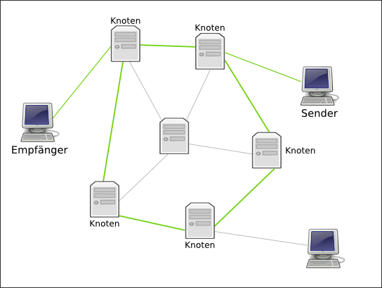
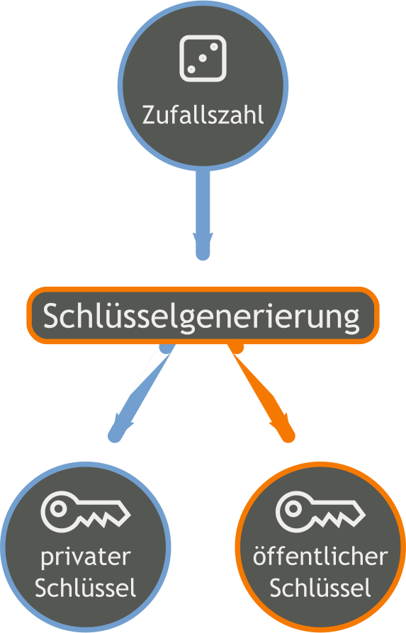
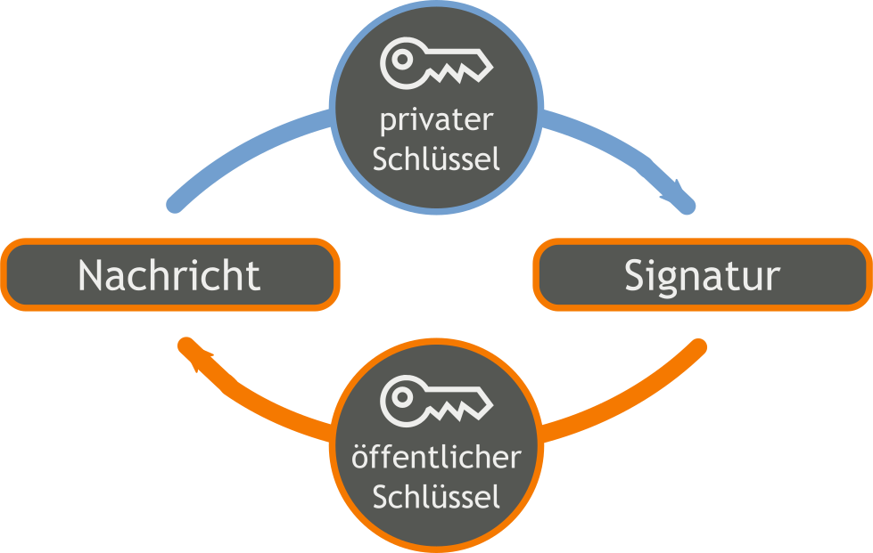
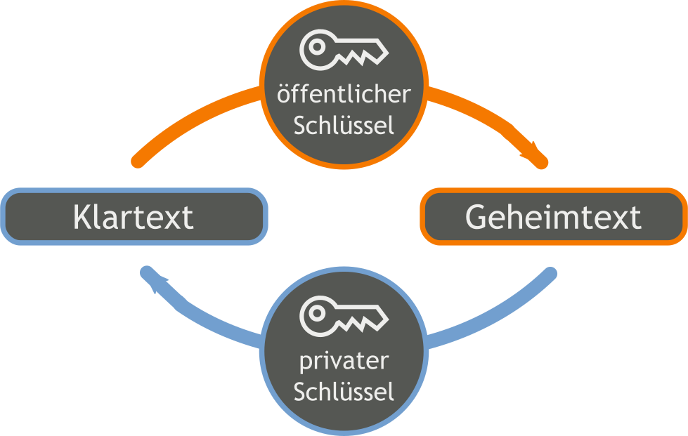
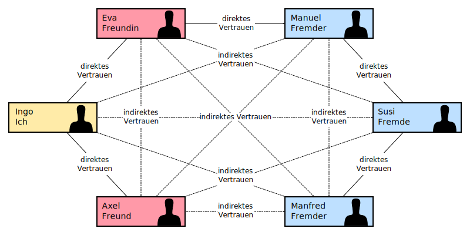

Marco Ziesing
27. Februar 2012
Die Sicherheit von elektronischer Post, die über das Internet verschickt wurde, kann mit genau drei Worten beschrieben werden: Es gibt keine.
Daher sollten E-Mails mit Inhalten, die nicht für die Öffentlichkeit bestimmt sind, verschlüsselt werden.

Hinter jedem Knoten könnte ein neugieriger Admin sitzen.
  
Funktionsprinzip (stark vereinfacht)
Alice signiert den Schlüssel von Bob
Bob signiert den Schlüssel von Carl
somit vertraut Alice dem Schlüssel von Carl.
